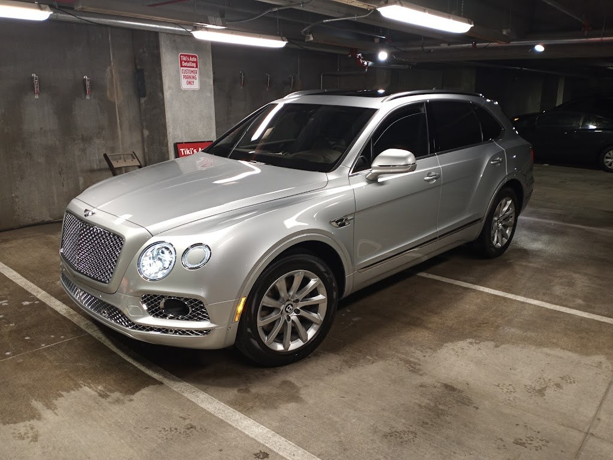
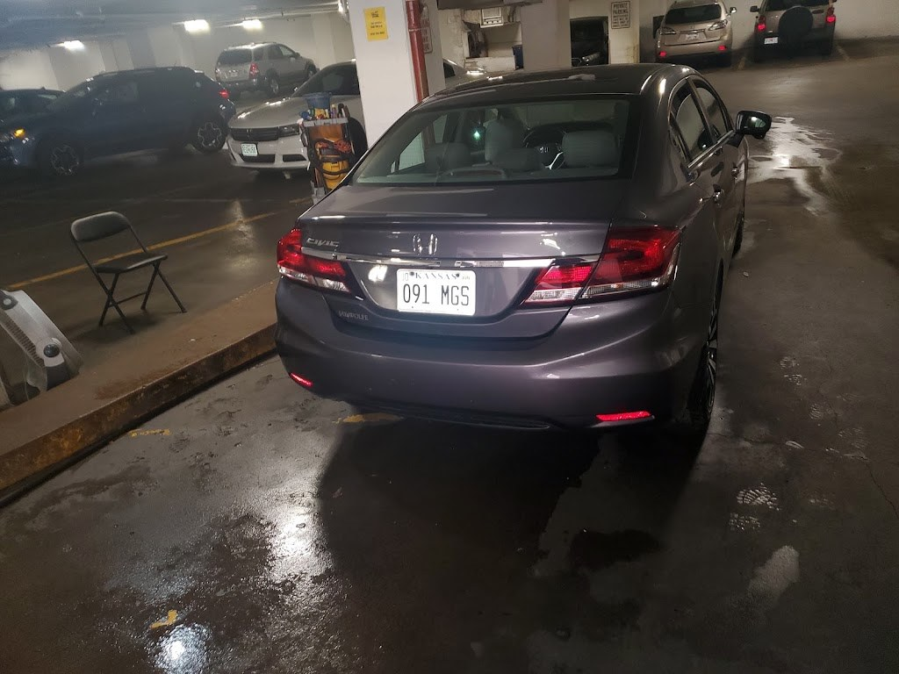
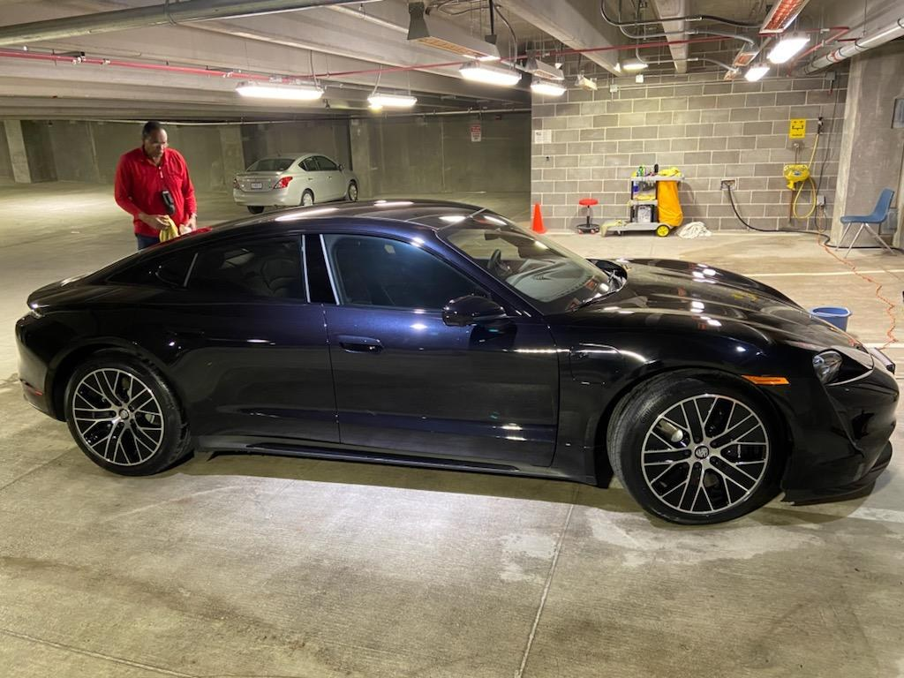

Auto Detailing, Kansas City MO
Tiki's Car Detailing
Hand washing, waxing, and full detailing in Kansas City for 40+ years, with pick-up and delivery, by appointment.
In business 40+ years, by appointment.

About
Tiki's Car Detailing is an auto detailing shop at 4622 Pennsylvania Ave, Suite 1, in Kansas City, Missouri, in business 40+ years. Services include hand washing, exterior waxing, interior shampooing, motor and engine cleaning, odor removal, and dog-hair removal for an extra charge, plus pick-up and delivery. Work is by appointment. Prices from the Google listing: cars, hand wash and vacuum $55, full detail $225; small pickups and SUVs, $65 and $255; large SUVs and pickups, $70 and $290. Hours are Monday through Friday, 9:15 AM to 5:00 PM, Saturday and Sunday closed. Call (816) 753-0057 to book a detail.
Book a detail
Work is by appointment, with pick-up and delivery available. Call (816) 753-0057 to book a detail.
Detailing services
Hand wash and vacuum
Cars $55, small pickups and SUVs $65, large SUVs and pickups $70.
Full detail
Cars $225, small pickups and SUVs $255, large SUVs and pickups $290.
Exterior waxing
Exterior waxing with the detail.
Interior shampooing
Interior shampooing.
Motor and engine cleaning
Motor and engine cleaning.
Odor removal and dog-hair removal
Odor removal and dog-hair removal for an extra charge.
Pick-up and delivery
Pick-up and delivery available.
Gallery


All three photos are real photos from the business's Google Maps listing. They show a silver Bentley Bentayga SUV in a garage, the rear of a dark gray sedan in a wet garage detailing bay, and a black sports car in a garage bay.
Visit
Address: 4622 Pennsylvania Ave, Suite 1, Kansas City, MO 64112
Hours: Monday through Friday, 9:15 AM to 5:00 PM; Saturday and Sunday closed.
Phone: (816) 753-0057
Contact
Tiki's Car Detailing serves Kansas City, MO. Questions? Call (816) 753-0057.